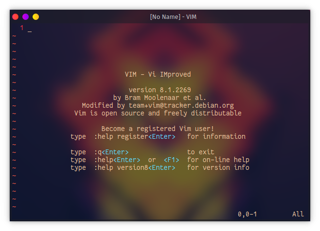
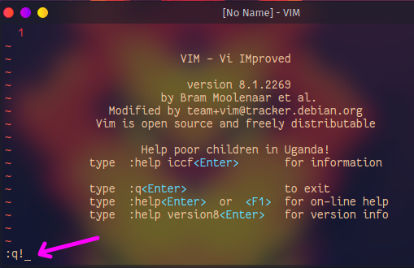
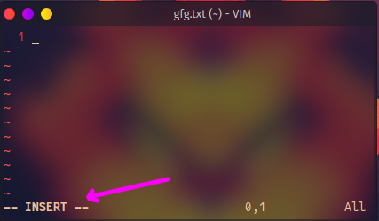
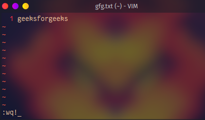
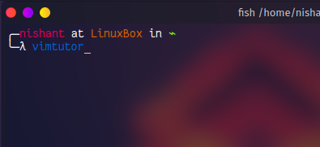
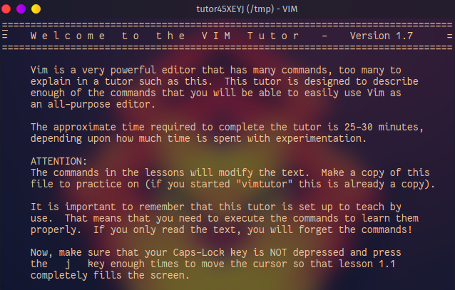
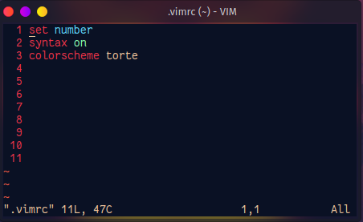

Linux Vim
Getting Started with Vim Editor in Linux
Vim is an advanced and highly configurable text editor built to enable efficient text editing. Vim text editor is developed by Bram Moolenaar. It supports most file types and vim editor is also known as a programmer’s editor. We can use its plugin based on our needs
Installation and Configure vim in Our Linux SystemTo install vim on Debian based Linux like ubuntu run the command:
sudo apt-get install vimTo install vim on an arch-based distro run the following command:
sudo pacman -S vimNow vim will be installed on your system.
You can open vim by running vim command on the terminal.
Vim There are some commands given to use the vim editor. You can see all commands, and it’s documentation by help command as follows:
:helpNow to exit type this command
:!q Now, Let’s Start to use Vim
To open a file in vim editor just write the file name after the vim command in the terminal as follows:
vim filename.txtThen the file will be opened.
Write into file
In the previous step we have opened the file now, Let’s write some content in to write data we need to go in insert mode. To go into write mode type i. As follows:
iAfter going into insert mode you will see INSERT in the status bar. After that, we can write any data in it.
Save and Exit:
We have written the data into a file now the task is to save and close the file to do that first exit from insert mode by pressing the Esc key. To write a command first type semicolon ( : ) and then type the command wq! or x! (both do the same thing) And then hit ENTER.
:wql Exit without saving the file:
To exit from the file without saving the file just use the command q! As follows
:q!Vim also comes with its own tutorial. You can see this tutorial by command vimtutor into the terminal .
vimtutor Now vim tutorial will be opened as follows:
Moving the Cursor:
Till now, we are using the arrow keys to move the cursor into a file, but it is not recommended to use arrow keys in vim. Vim provides the special key to move the cursor in the vim editor following are the keys used to move into a file.
* k -> move up ^ * j -> move down k * h -> move right < h l > * l -> move left jJust use these commands in vim files and move the faster cursor into the files.
Exiting Vim:
To exit without doing anything go into command mode by pressing the Esc key and type the following command.
:qTo exit from vim without saving changes type the following command in vim
:q!To quit and save changes type the following command
:wqText Editing: Deletion
We provide x key in command mode to delete the character under the cursor. Move the cursor to the character which has to delete and press Esc key and then press the x key
xThe character under the cursor will be deleted.
Text Editing: Insertion
We have edited some text files before by using the i key. There are Four keys used for the insertion of text. Just type the key into the normal mode in vim.
i -> This key is used to put the cursor before the current position. a -> This key is used to put the cursor after the current position. o -> This key is used to put the cursor below the line. O -> This key is used to puts the cursor above the line.Motion: Motions provide context to your Operators. These execute the action in a particular way.
Here is a list of some motions
w - until the start of the next word, EXCLUDING its first character. e - to the end of the current word, INCLUDING the last character. $ - to the end of the line, INCLUDING the last character.We can use motion with the d key and with many more keys
Count: Count is the number for which replete the motion for count number. Here is a demonstration of the use of count and motion
To move courser 2 words forward use the following command
2wHere 2 is the number of counts and w is used for word
To move the cursor 4 lines forward use the following command
4$Deletion Commands: Always use the Esc key to go into normal mode and use the insertion, deletion keys, and other keys.
Todelete the word move the cursor to the beginning of the word and use dw command in normal mode. The word under the cursor will be deleted.
dwTo delete more than one word in a single line use the following command.
To delete 2 words use the command
d2wTo delete the line move cursor to the beginning of the line and use d$ command in normal mode. The line under the cursor will be deleted.
d$Undo and Redo:
As we are programmers most time we are using undo and redo .vim to provide these to both features in it. To undo press u key in normal mode
uTo redo use the ctrl+r key in normal mode in vim
ctrl+rReplace :
To replace the character under the cursor use rx command where ‘x’ is a character is to replace.
rChange Operator:
In vim c is used as a change operator. To replace the word use ce command
ceTo replace the line use c$ command
c$This command will delete the contains from the cursor to the end of the line. Then this will automatically go into insert mode then you can put anything in that line.
Cursor location:
We can use the h,j,k,l key to move the cursor in the file but it will be difficult to move in big file vim provide more commands to move into the file.
To move the cursor at the start of the file use the gg command
:ggTo move the cursor at the bottom of the file use the G command
:GTo view the current cursor location in the file using the following command:
:ctrl+gIn place of 32 use can put any line number.
Search:
To search the word After the cursor uses the backslash key and then write the word and press enter.
:/wordUse n to move on next matching word
:nUse N to move on previous matching word
:NSearch and Replace:
To replace the word in file use s/ command in vim like
:s/searchword/replaceword/To do replace all occurrence of word use g
:s/searchword/replaceword/gThis command will replace the word globally.
To confirm before replacements of words use gc
:s/searchword/replaceword/gcTo use this command in the whole file use % before the command
:%s/searchword/replaceword/gcVim configuration:
To configure vim, vim comes with the .vimrc file in the home directory if this file is not there then create one. Then open the file in vim by command
vim ~/.vimrcYou can put your all configurations in this file.
You can set line number by using a simple command
set numberPut this command in your .vimrc file
To enable syntax highlighter in vim use command
syntax onPut this command in .vimrc file then save file and exit after opening file again you will see the line numbers in vim.
Vim comes with many color schemes using the command:
colorscheme COLOR_SCHEME_NAMEReplace COLOR_SCHEME_NAME with any color scheme between Default, blue, darkblue, delek, desert, elford, evening, industry, koehler, morning, murphy, pablo, peachpuff, ron, shine, slate, torte, zellner then save file and exit then again open file to see changes.
